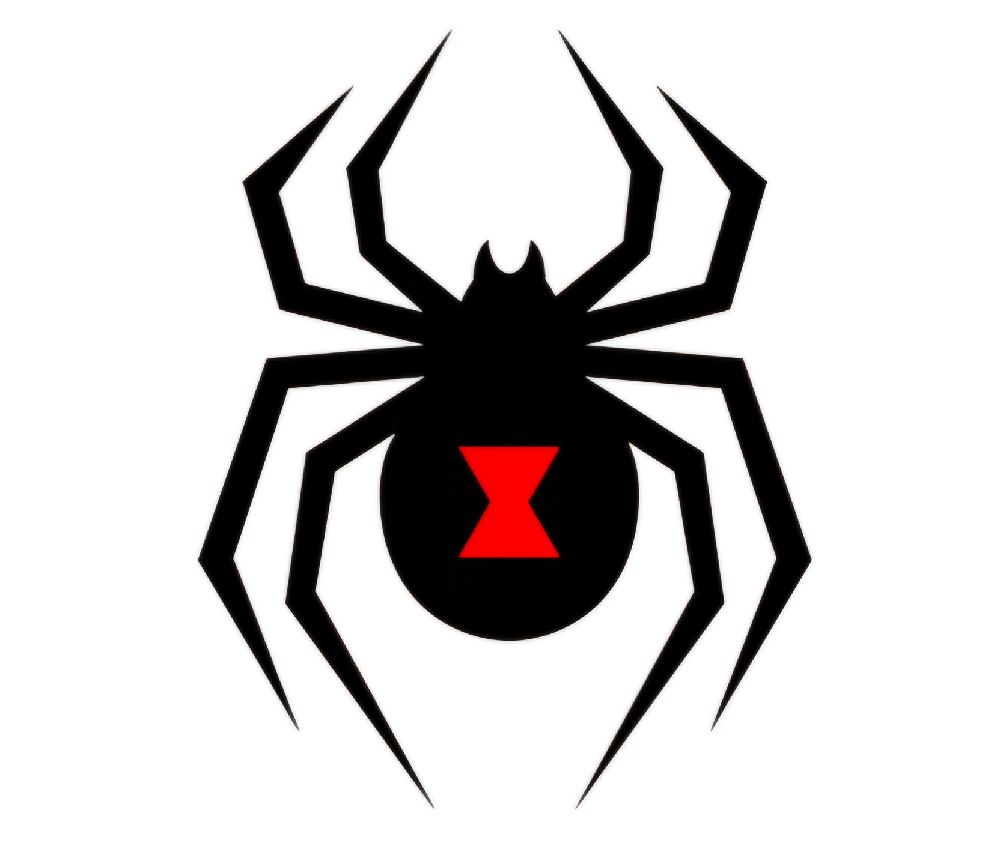

Plataforma principal de acceso a la documentación, pruebas realizadas y análisis histórico del repositorio InvenTree.
Acceso a la documentación técnica y general relacionada con el repositorio InvenTree, funcionalidades y arquitectura del sistema.
Sección dedicada a las pruebas realizadas sobre el repositorio, incluyendo análisis, validaciones y resultados obtenidos.
Información relacionada con la evolución, desarrollo y crecimiento histórico del proyecto InvenTree.
InvenTree es utilizado en empresas, laboratorios y proyectos tecnológicos para la gestión de inventario, seguimiento de componentes, control de stock y procesos de manufactura.
Su implementación permite organizar productos, automatizar procesos y mejorar la trazabilidad de materiales dentro de entornos empresariales reales.
InvenTree compite con plataformas de gestión empresarial e inventario como:
Sin embargo, destaca por ser Open Source, altamente extensible y especializado en control de componentes y manufactura.
El proyecto InvenTree fue seleccionado debido a su arquitectura moderna, documentación técnica, sistema de pruebas automatizadas y complejidad empresarial.
También fue elegido porque permite analizar: